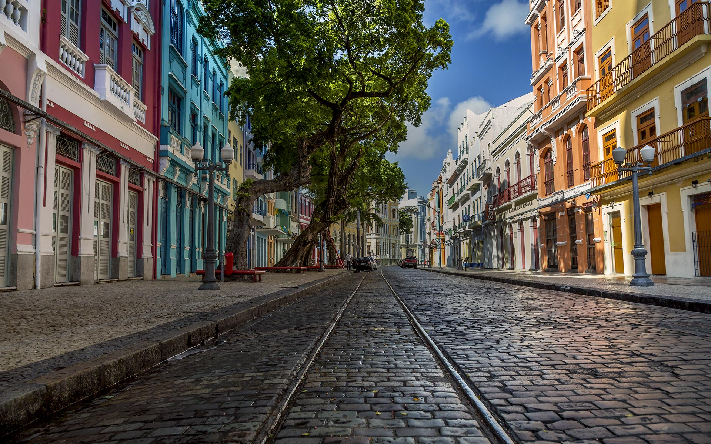
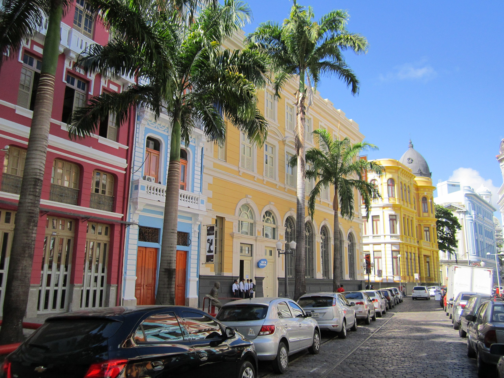
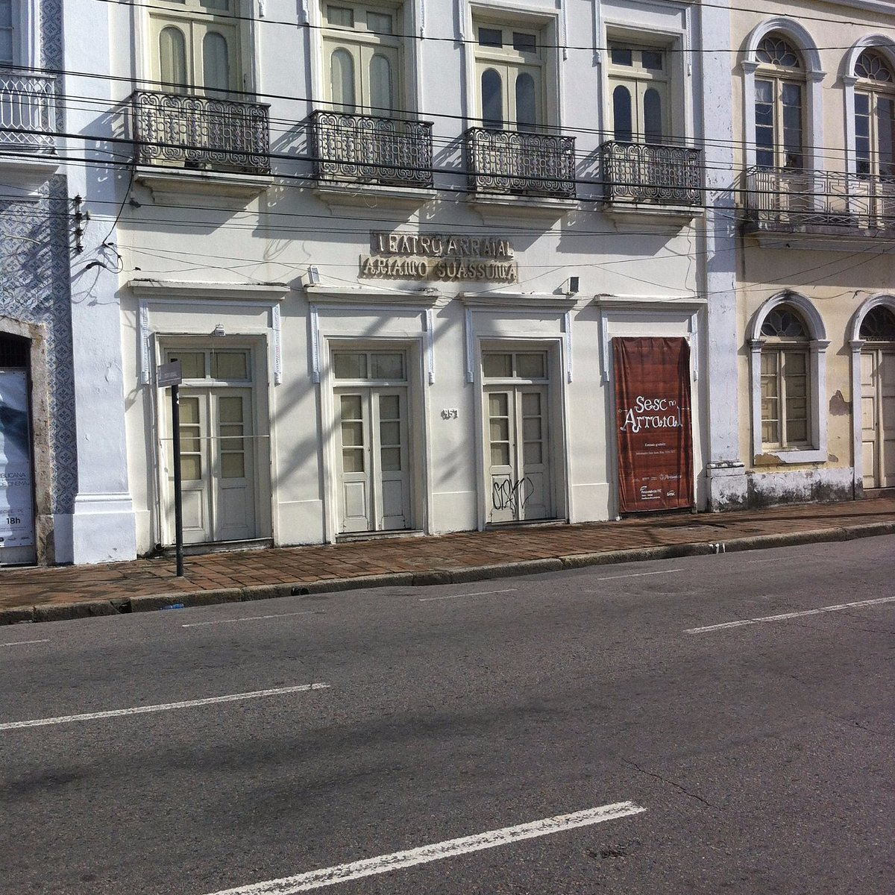
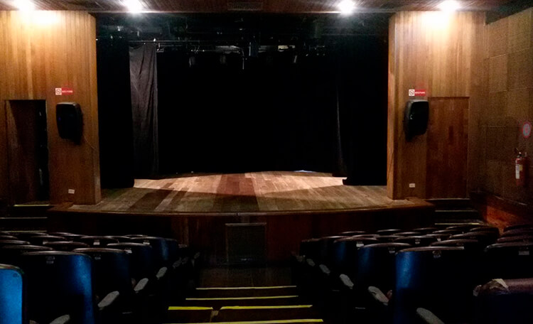
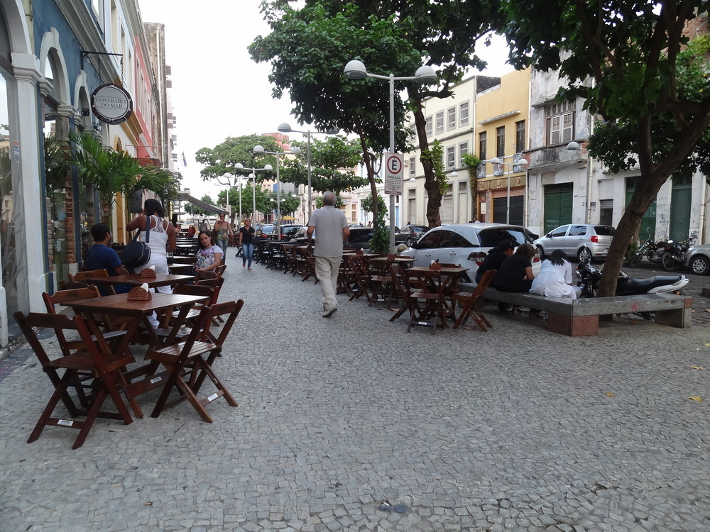
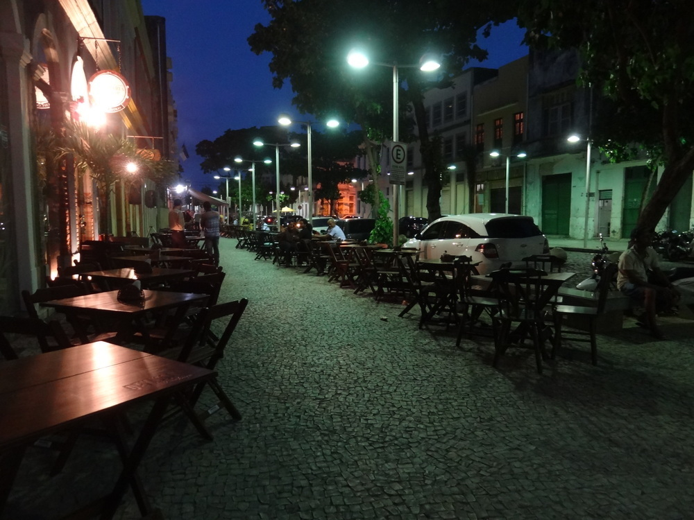

Um lugar com muita história, charmosas ruas de paralelepípedo que mantêm até hoje o caminho por onde circulavam os bondes, casarões e construções antigas que enchem os olhos com muita arte, cor e alegria. Estamos falando do Recife Antigo, o bairro que é o berço da capital pernambucana.
 Em homenagem a um dos maiores defensores da cultura popular nordestina, autor de clássicos da literatura brasileira como O Auto da Compadecida e O Romance d’A Pedra do Reino, o Governo do Pernambuco rebatizou no final de 2014 o equipamento cultural localizado na Rua da Aurora, no Recife. O primeiro nome do teatro foi uma sugestão de Ariano, para marcar a época do seu lançamento, já que 1997 foi o ano do centenário de destruição do Arraial de Canudos. A referência a este episódio histórico está nas figuras de Antônio Conselheiro e de sua companheira Maria Villanova, que foram retratados num belíssimo vitral, que ornamenta as laterais do palco do teatro.
 A Rua da Moeda é uma das mais conhecidas do Recife Antigo, popular entre os jovens por aglomerar vários bares legais na mesma região. Para quem quer fazer um happy hour ou encontrar os amigos, os bares da rua são boas opções. O lugar também recebe apresentações musicais, inclusive nas prévias do Carnaval.
 